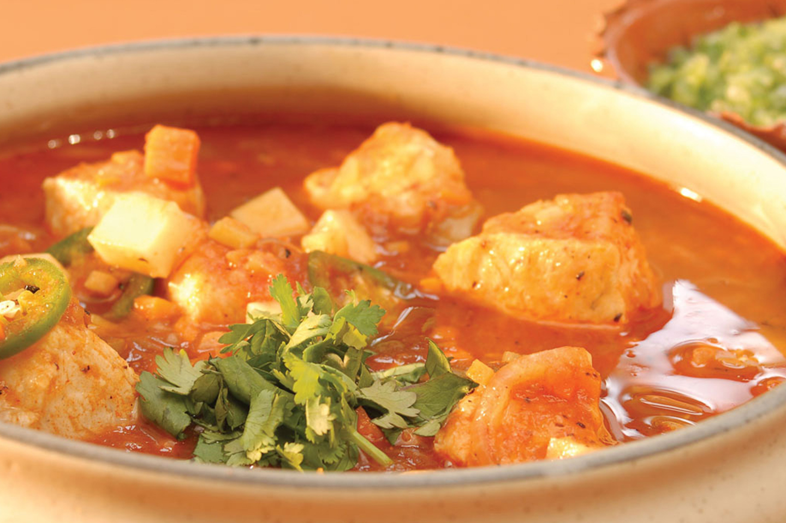

CALDO DE OSO

LEÓN, ES CONOCIDA COMO LA CAPITAL MUNDIAL DEL CALZADO, YA QUE ES LA INDUSTRIA QUE LIDERA LA ECONOMÍA DE ESTE ESTADO DEL BAJÍO. SIN EMBARGO, TAMBIÉN ES FAMOSA POR EL TRADICIONAL CALDO DE OSO QUE PUEDES ENCONTRAR EN CUALQUIER PUESTO O ESTABLECIMIENTO.
SE TRATA DE UNA REFRESCANTE Y RICA BOTANA DE JÍCAMA, PEPINO, PIÑA, ADEREZADA CON VINAGRE,CEBOLLA, CHILE, LIMÓN Y QUESO. ES TODA UNA TRADICIÓN VISITAR ESTA TIERRA Y DEGUSTAR ESTE DELICIOSO ANTOJITO.